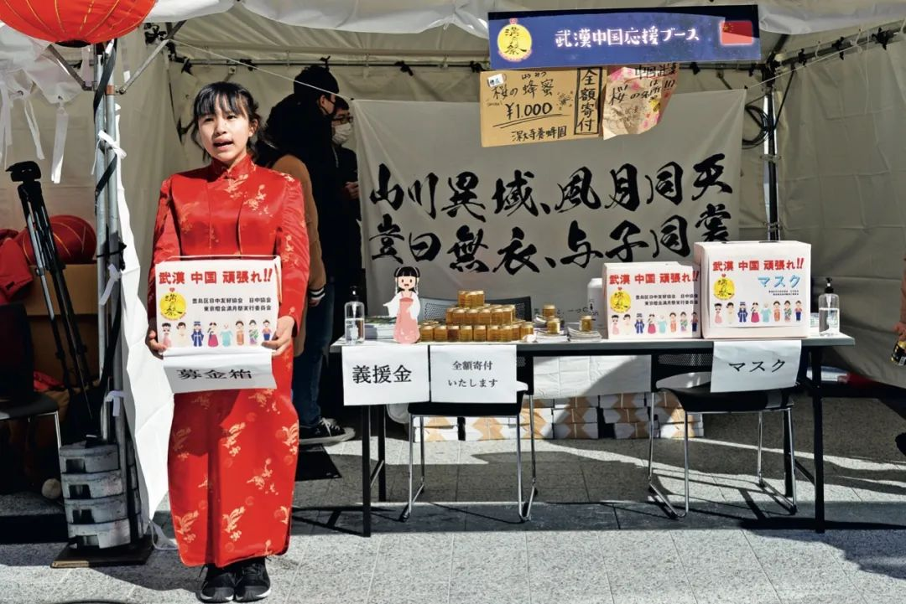
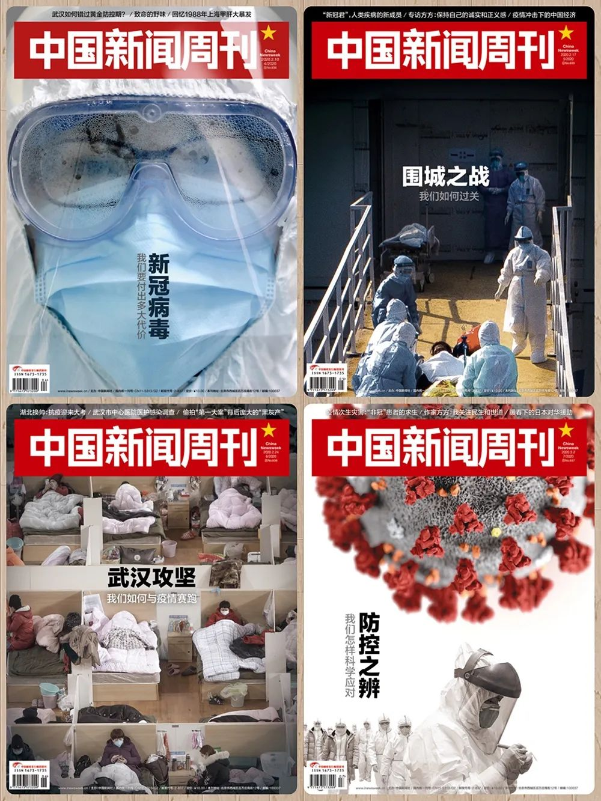

近藤大介：日本疫情可能进一步扩大 - 经济观察网 － 专业财经新闻网站
原文链接 备份链接 近藤大介/文 2月16日晚，日本厚生劳动大臣加藤胜信在记者招待会上无奈地表示：“目前，疫情正在逐渐发生变化。病毒的传染路径已经开始让人捉摸不透了……” 就在当天下午的5点，日本政府组织召开了“新型冠状病毒对策专家会”的 …

“安倍采取了比特朗普政府更温和的态度”


2月8日，在日本东京池袋， “旗袍女孩”在“东京灯 会满月祭”现场为中国募捐 。图 / 新华
暖春下的日本对华援助
本刊记者/李静
*发于2020.3.2总第937期《中国新闻周刊》*
2月17日凌晨，来自日本的第五趟包机载着援助物资飞抵武汉。
从1月28日首趟包机飞抵武汉开始，来自日本的援助物资源源不断地进入中国，援助方涵盖日本从中央到地方的各级政府，以及企业、民间团体和个人。日本自民党干事长二阶俊博在接受采访时表示，日本“以举国之力向中国提供支援”。
日本国际协力机构（JICA）全程参与了首趟包机的物资采购和协调工作。JICA中国事务所副所长糟谷良久告诉《中国新闻周刊》，本来JICA的储备仓只有帐篷、毛毯这类应急救援物资，而武汉急需的口罩、防护服等防疫用品，都是临时协调、紧急采购来的。
中国驻日本大使孔铉佑在近日发表的一篇随笔中写道：“在自身也面临新冠肺炎防控压力的情况下，日方能够出于人道主义精神向中方雪中送炭⋯⋯这种跨越国界的情谊难能可贵，也得到了中国民众的诚挚感谢。”
态度比特朗普政府更温和
2月10日，日本自民党干事长二阶俊博宣布，自民党将向中国提供支援资金，将从包括日本首相安倍晋三在内的每一位自民党国会议员3月经费中，先行扣除5000日元（约合人民币318元），向中国捐款。
中国社会科学院研究员高洪对《中国新闻周刊》说，政治家群体自掏腰包捐款，这一举动可以说史无前例，“钱的金额虽然不大，但瓜子不饱是人心”。这也展现了一种姿态，因为政治家的行为是有一定示范作用的。
中国遇到重大灾情，日方全力提供援助，这并不是第一次。糟谷良久向《中国新闻周刊》介绍，自上世纪80年代以来，因中国发生重大灾害，日本政府向中国提供近20次物资等方面的大规模援助，包括1998年长江特大洪水、2003年非典疫情、2008年汶川大地震。
2008年汶川地震，日本政府通过 JICA 先后派遣了由61名人员组成的国际紧急救援队。当时，糟谷良久作为救援队的一员，进入最核心的灾区北川，参与了青川县、北川中学、北川县城的搜救，“在那里体验了余震，也感受灾害带来的悲怆、痛苦、危险”。这次经历，让糟谷良久“一辈子难忘记”。
糟谷良久认为，每个灾害都有不同的情况，援助也有不同的特点，不能简单地进行比较。在他看来，中日之间有很多交流和互相帮助的渠道，一旦发生了大灾害，这些渠道都会发挥作用。
但与以往的援助相比，日本这次自上而下总动员式的援助，还是有不少特殊性。除了自民党国会议员扣除经费用以向中国捐款外，一些日本地方政府还动用了救灾应急物资。
日本茨城县中部的水户市，只有27万常住人口，救灾应急储备中有15万只口罩，拿出5万只捐赠给了重庆市；名古屋市救灾应急储备中共有36万个口罩，向友好城市南京市捐赠了10万个；常住人口约17万的日立市只储备了两万零几千个口罩，拿出两万个作为支援物资，几乎倾囊而出。此外，东京、大分、熊本、长崎、宫崎等日本地方政府都不惜动用救灾应急储备援助中国。
由于日本地震、火山喷发、台风等自然灾害较多，日本各地政府都有救灾物资储备。这种救灾应急物资，是在灾害发生时用来保障当地灾民生活必需应急用的，动用救灾应急储备去援助其他国家非常罕见。
据日本卫生材料工业联合会数据，日本国内原有近10亿个家用口罩库存，在过去短短一个多月里已经告罄。现在，口罩缺货的场景已经在日本多地出现。
日本湖北总商会执行会长吴小玲自上世纪80年代起就在日本工作和生活，在她看来，日本人是很有感恩之心的，“你给他一份爱，他就还你十分情，民族性格就这样”。日本前首相鸠山由纪夫在录制为武汉加油的视频中也提到，日本不会忘记“311”特大地震时中国对日本的帮助。
“日本是个多灾多难的国家，他们很知道灾难来了是什么样子，邻居遇到灾了，他们有一份共情心，会自觉地去帮助。”吴小玲说。
另一方面，按照世界卫生组织的说法，作为国际关注的突发公共卫生事件，新冠肺炎疫情的影响是跨越国界的，对相互间经济合作、人员往来密切的国家影响尤其大。
日本知名的综合研究兼智囊咨询机构大和总研测算了疫情对日本实际GDP的影响：若疫情持续三个月，将会使其减少0.1％；若持续一年，将会减少0.9％。
在2003年非典疫情时，日本曾采取在当时比较严厉的措施，例如警告国民不要到北京和广州旅游，尽量少到中国出差，尽量减少与中国人的接触；所有日本人从中国回国10天以内自行隔离，不准上班上学，不准到街上走动；停止每年数万名中学生到中国修学旅行；取消了许多中国代表团访问和参加国际会议的资格等。
当时，中日两国双向人员往来还不到400万人次。但到了2018年，两国双向人员往来已经超过1100万人次，其中赴日本中国游客达到838万人次。相比之下，2018年中美两国的人员往来超过500万人次，为中日人员往来的一半。
截至2月23日，日本新型冠状病毒感染确诊人数已经上升至755人，但对比美国、澳大利亚、俄罗斯等国因疫情禁止中国人入境的临时性限制措施，日本至今对中国旅客的入境限制仍然相对宽松：申请入境当日之前的14天内有中国湖北省、浙江省停留史的外国人，以及持有此两省发行的该国护照的外国人，不允许入境日本。日本乒乓球协会2月21日还表态，欢迎中国乒乓球队前往日本进行奥运前的备战。
《日本时报》报道称，到目前为止，日本首相安倍晋三成功地避免了新冠肺炎疫情对中日关系产生消极影响。“安倍采取了比特朗普政府更温和的态度，为东京在北京赢得了赞誉。这与安倍近年来着力修复与中国这个最大贸易伙伴的关系一脉相承。2012年之后，两国关系曾一度遭遇数十年来最严重的低谷”。
适度向亚洲倾斜
作为世界上的援助大国，对外援助是日本公共外交的重要手段，除了有人道因素，也有经济、政治甚至安全方面的考量。其中，政府开发援助（简称为ODA）是二战后日本对外进行援助的一种最重要的方式。
ODA脱胎于二战后的战争赔偿，与日本最早签订ODA协定的是缅甸、菲律宾、印度尼西亚、越南、泰国、马来西亚等东南亚国家。那时，由于二战日本与亚洲疏离，以日美关系为基轴，ODA成功缓和了日本与东南亚各国的紧张关系。
瑞士日内瓦韦伯斯特大学学者莱昂内尔·法顿（Lionel P Fatton）在题为《日本归来：动摇的中-美-日三角关系中的自主和平衡》一文中说，1971年，美国国家安全顾问亨利·基辛格秘密访华，为1972年尼克松访华铺平了道路，但是美方没有通知日本领导人。由于前所未有地担心美国转而支持中国，日本政府急于与中国实现关系正常化，承诺向中国政府提供巨额援助。
1972年，中日实现邦交正常化。自1979年开始，日本为中国提供了40年总额超过36461万亿日元（约合2852亿元人民币）的ODA援助。
美国史密斯学院研究日本外交政策的学者丹尼斯·安友在《日本何以成为对外援助大国》等文章中写道，ODA成功帮助日本摆脱了战后的外交困境。日本逐渐发现，在所有的外交手段中，对外援助是一种更为温和灵活的政策工具。
在2012年12月二度入主首相官邸后，安倍政府对东南亚和中亚地区的援助开始大幅增加。此外，伴随着21世纪是“亚洲世纪”的说法被不断提出，安倍政府的政策重心也适度向亚洲倾斜。2015年又一次修订的ODA大纲中，首次提及“国家利益”，明确指出ODA“确保为维持日本和平、实现繁荣的国家利益而继续贡献。”
2013年，安倍在一年时间内访问了东盟所有10个成员国，并在2013年12月举行了日本与东盟国家特别峰会。此外，据前中国驻日本大使程永华透露，2012年中日关系陷入困难时期之后，是日方在2016年最先显示积极姿态的。2013年1月，安倍在众议院接受质询时还说：“日中关系对我国而言是最重要的双边关系之一。”
莱昂内尔·法顿认为，在奥巴马担任总统期间，美国曾制定“转向亚洲”政策，但在特朗普上台之后，美国对日本的安全承诺越来越不确定。同时，美国在东亚投射军事力量的能力越来越弱，加上预算限制，将影响其作为日本安全保护者的可信度。
面对日本周边特别是东北亚区域格局的新变化，自2018年9月至2019年2月，安倍在不同场合先后公开提出“战后日本外交总决算”的战略概念。安倍指出，朝鲜核问题、解决朝鲜绑架日本人质问题、中日关系完全正常化以及日俄缔结和平条约等问题，将作为“战后日本外交总决算”框架中着重需要解决的问题。
中国社科院日本研究所副研究员庞中鹏在2019年9月第5期《东北亚学刊》中撰文指出，“战后日本外交总决算”的提出与安倍想大幅度改善同中国的关系有很大关联。2018年开始，中日关系逐渐重回正轨。同年10月，在正式访华前夕，安倍在日本国会发表的施政演说称，要将日中关系提升到一个新阶段。
2020年1月20日，安倍在日本国会发表演讲称，2020年是“建立日本外交新时代的关键一年”。除了敦促韩国总统文在寅在新十年开始时建立建设性的日韩合作关系外，安倍还明确指出，要建立与新时代相关的“成熟”日中关系，“日本和中国都对地区和全球的和平与繁荣负有巨大的责任。”
高洪表示，在这样一个“暖春”背景下，面对新冠肺炎疫情，日本从政府到民间都表现出对中国的支持，也传达出对中日关系进一步改善的期待。
值班编辑：俞杨
封面报道
《新冠病毒——我们要付出多大代价》
《围城之战——我们如何过关》
《武汉攻坚——我们如何与疫情赛跑》
《防控之辨——我们怎样科学应对》
***点击下图，一键下单***

* *
*

原文链接 备份链接 近藤大介/文 2月16日晚，日本厚生劳动大臣加藤胜信在记者招待会上无奈地表示：“目前，疫情正在逐渐发生变化。病毒的传染路径已经开始让人捉摸不透了……” 就在当天下午的5点，日本政府组织召开了“新型冠状病毒对策专家会”的 …
原文链接 备份链接 关注并星标消费新声 不错过泛消费任何最新动态 尤其在近十年，尽管国际形势时有起落，但两国的经济和民间交流正在不可逆地粘连到一起，相似的传统文化背景让我们之间形成对照，成为几乎不可能被斩断的近邻。 作者 | …
原文链接 备份链接 ***************************************▲*************春节前，日本生活空间nikoand在上海开设全球最大旗舰店，开业当天，成百上千的消费者在淮海中路分批排队，预计等 …
原文链接 备份链接 近日，多国新冠肺炎确诊人数暴增。美国出现第二例新冠肺炎死亡病例，意大利新冠肺炎累计病例1694例，日本北海道宣布进入紧急状态，世界卫生组织总干事谭德塞2月28日宣布将新冠肺炎疫情全球风险级别由此前的“高”上调为“非常 …
原文链接 备份链接 我有一位长居中国并深爱中国的美国人朋友，他叫小轩。小轩趁着农历新年放假，跑到欧洲探亲，探到一半却接到单位通知，说因为疫情不许回中国。 什么时候能回去？ “等通知。” 要是擅自回去了呢？ “后果自负（小轩的解读是开 …